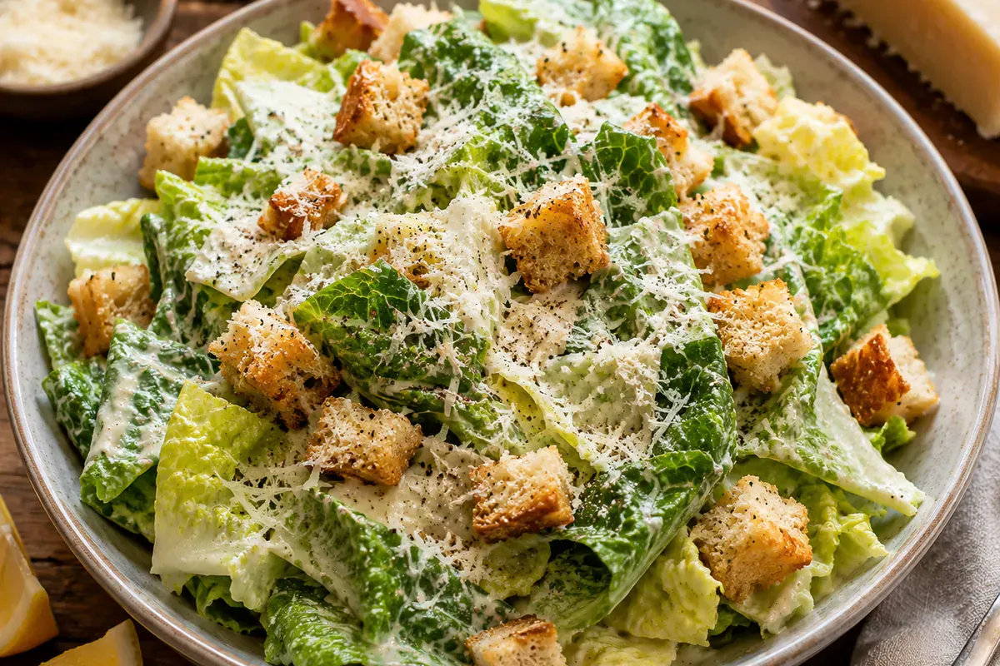

Classic Caesar Salad

Illustrative image.
A good caesar salad is mostly about contrast: cold, crisp romaine against a dressing thick with garlic and parmesan, and croutons big enough to still have a soft centre. This version uses a mayonnaise base, which sidesteps the raw egg question and gives a stable dressing that holds for days.
It comes together in fifteen minutes and needs no cooking beyond toasting the croutons. Four generous portions are enough as a starter, or two as a main with grilled chicken on top.
Ingredients
- 3 hearts of Romaine lettuce, chopped
- 1 cup large crunchy croutons
- 1/2 cup shredded Parmesan cheese
- 1/2 cup high-quality mayonnaise
- 2 cloves garlic, finely minced
- 1 tsp Dijon mustard
- 1 tsp Worcestershire sauce
- 2 tbsp fresh lemon juice
- 1/3 cup grated Parmesan cheese
- Salt and fresh cracked black pepper
Instructions
- In a small bowl, whisk together the mayonnaise, minced garlic, Dijon mustard, Worcestershire sauce, and lemon juice until entirely smooth.
- Stir the 1/3 cup of grated Parmesan cheese into the dressing mixture. Season to taste with a generous amount of cracked black pepper.
- Wash, dry, and thoroughly chop the Romaine lettuce hearts, placing them into a large salad serving bowl.
- Drizzle the creamy Caesar dressing over the Romaine, toss thoroughly to coat the leaves, and top with large croutons and shredded Parmesan cheese right before serving.
Why this recipe works
Mayonnaise already contains the oil and egg that a classic emulsion needs, so whisking in lemon, dijon, worcestershire and parmesan produces a dressing that is both sharp and creamy without any risk of splitting. Dressing the leaves lightly and tossing with your hands coats every piece evenly.
Tips for success
- Wash and dry the romaine thoroughly. Water on the leaves dilutes the dressing and makes the salad limp.
- Tear the leaves rather than chopping them, so the cut edges do not brown.
- Add the croutons and parmesan at the very end and toss once, so they stay crisp.
Substitutions that work
- Greek yogurt can replace up to half the mayonnaise for a lighter dressing with more tang.
- Anchovy paste is optional but adds the savoury depth people expect from a caesar; a teaspoon stirred into the dressing is enough.
- For a gluten-free version, use toasted gluten-free bread or skip the croutons and add toasted almonds.
Storage and make-ahead
The dressing keeps in a sealed jar in the refrigerator for four days; shake before using. Dressed salad does not keep, so only dress what you plan to eat. Store leftover undressed romaine in a bag with a paper towel for up to three days.
Serving suggestions
Serve it alongside a steak, a plate of pasta or a roast chicken. Add grilled shrimp or chicken to make it a main course, and pass extra parmesan at the table.
Making the dressing ahead
The dressing improves if you make it a few hours ahead, because the garlic mellows and the flavours settle. Whisk it together, cover it and refrigerate, then taste it again before using; cold dulls salt and acid, so it often needs a squeeze more lemon. If you want a sharper, more traditional flavour, mash a fillet of anchovy into the mayonnaise before adding the other ingredients. Add the grated parmesan in two stages, half in the dressing and half over the leaves, so the salad tastes of cheese at every level rather than only on top. The dressing thickens in the fridge and thins again at room temperature.
Frequently asked questions
Is this caesar dressing made with raw egg?
No. This version uses mayonnaise as the base, so there are no raw eggs and the dressing is stable enough to keep for several days.
Can I make caesar dressing without anchovies?
Yes. Worcestershire sauce provides some of the same savoury depth, and a teaspoon of capers can add a similar briny note.
How do I keep the salad crisp?
Dry the romaine well, chill the bowl, and dress the leaves just before serving rather than in advance.